Создание архитектуры RISC
Как уже неоднократно упоминалось, все х86-процессоры, решения компании Motorola и подавляющее большинство выпущенных в 1980-е годы кристаллов имели архитектуру CISC (Complex Instruction Set Computing). Совокупность всех особенностей привела к тому, что чипы стали не только сложными и дорогими в производстве, но и достигли своего потолка производительности. Для дальнейшего увеличения быстродействия требовалось наращивать количество транзисторов, однако освоенные технологические нормы не позволяли создавать более сложные решения. С этим столкнулась Intel при выпуске семейства i486. Для поднятия производительности они внесли изменения в архитектуру процессоров, добавив кэш-память, множители и конвейеры. Словом, 486-е «камни» получили некоторые «фишки» архитектуры RISC. Тем не менее к созданию RISC-платформы американская компания никакого отношения не имеет. Своим созданием архитектура обязана американскому инженеру Дэвиду Паттерсону, который руководил проектом Berkeley RISC с 1980 по 1984 годы.
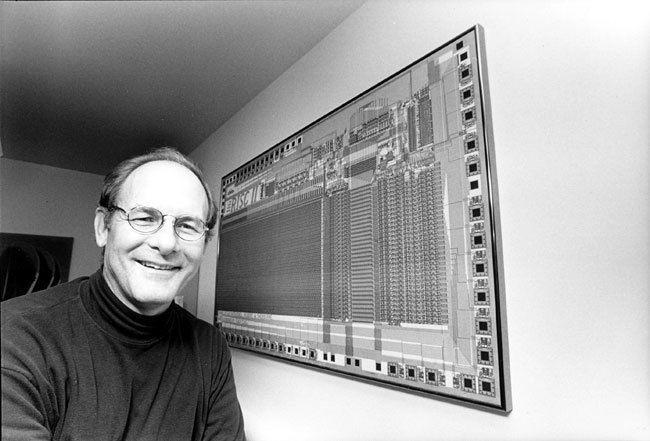Первоначальной идеей, которая затем воплотилась в столь масштабный проект Berkeley RISC, стало исследование работы Motorola 68000. В ходе наблюдений выяснилось, что программы попросту не использовали подавляющее большинство инструкций, заложенных в процессор. Например, система Unix при компиляции использовала лишь 30% команд. Поэтому в рамках проекта Berkeley RISC планировалось создать такой процессор, который бы содержал лишь самые необходимые инструкции.
После нескольких лет исследований и разработки было выпущено несколько образцов процессоров, название которых и дало имя всей архитектуры. Сама аббревиатура RISC расшифровывается как Restricted (Reduced) Instruction Set Computer, что переводится как «компьютер с сокращенным набором команд». «Сокращенный набор команд» вовсе не означает, что количество инструкций меньше, чем число команд CISC-кристаллов. Разница состоит в том, что любая инструкция платформы RISC является простой и выполняется за один такт (по крайней мере, должна выполняться), тогда как на выполнение RISC-инструкции могло уходить несколько десятков тактов. При этом длина команды является фиксированной. Например, 32 бита. Также у RISC имеется гораздо больше регистров общего назначения. Плюс для этой архитектуры характерна конвейеризация. Именно ее использование (вкупе с упрощенными командами) позволяет эффективно наращивать тактовую частоту процессоров RISC.
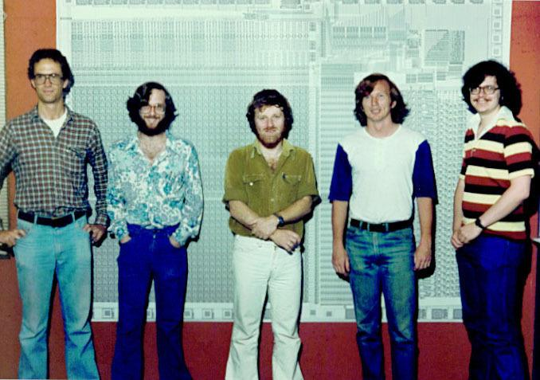Дебютными решениями стали RISC I и RISC II — детища Паттерсона и проекта Berkeley RISC. Первый содержал более чем 44 000 транзисторов и работал на частоте 4 МГц. Такой процессор при выполнении небольших программ был в среднем в два раза быстрее VAX 11/780 и примерно в четыре раза производительнее, чем «камень» Zilog Z8000. RISC II отличался от предшественника большим количеством инструкций: 39 против 32. Он был более быстрым. Его преимущество над процессором VAX достигало 200%, а Motorola 68000 в некоторых программах был медленнее примерно в четыре раза.
Нужно отметить, что Berkeley RISC был частью большого проекта под названием VLSI. Сюда также входил проект Стэнфордского университета MIPS, который стартовал в 1981 году.
Процессоры MIPS

Главой проекта MIPS был ученый Стэнфордского университета Джон Хэннесси. Как и в случае с Berkeley RISC, задачей стартапа было исследование и создание такого процессора, который использовал бы конвейер и сокращенный набор команд. Архитектура MIPS-решений также предусматривала наличие вспомогательных блоков в составе кристалла: например, модулей для работы с памятью, целочисленного АЛУ (арифметико-логическое устройство) и декодеров команд. Отличием плана MIPS от Berkeley RISC было использование удлиненного конвейера. Архитектура RISC, в принципе, предполагает использование конвейера, но Хэннесси пошел дальше и предложил максимально удлинить конвейер в процессоре, то бишь еще больше «раздробить» выполнение одной операции. Такой подход открывал еще большие просторы по наращиванию тактовой частоты. При этом удлинение конвейера обеспечивало более эффективное распараллеливание выполнения команд. В то время распараллеливание являлось отличительной чертой RISC-архитектуры, поскольку ни в одном CISC-процессоре эта функция не была реализована вплоть до появления в них конвейеров. Например, в MIPS, так же как и в RISC, выполнение одной команды могло быть еще не завершено, когда начиналась выполняться другая. В процессорах CISC для старта выполнения одной инструкции было необходимо, чтобы была окончена обработка другой.
В первоначальной спецификации процессоров MIPS не была предусмотрена поддержка таких элементарных операций, как умножение и деление. Сделано это было специально. Таким образом, разработчики хотели избавиться от необходимости использования так называемых блокировок конвейера. Сама блокировка представляла собой приостановку конвейера в тех случаях, когда операцию на определенной стадии конвейера невозможно выполнить за один такт. Тем не менее первые реализации архитектуры MIPS работали с блокировками и даже поддерживали операции умножения и деления. Прошло некоторое время, прежде чем в процессорах была реализована первоначальная задумка.
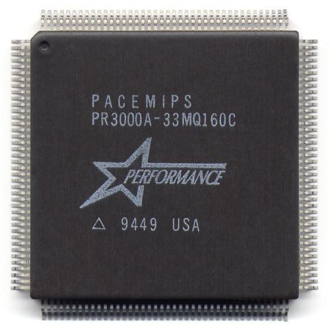В 1984 году Хэннесси покинул Стэнфордский университет и основал компанию MIPS Computer Systems, которая и занялась выпуском процессоров с одноименной архитектурой. Спустя год увидел свет первый продукт компании — 32-битный «камень» R2000. Он стал первой коммерчески доступной RISC-моделью в истории. В 1988 году появился процессор следующего поколения под названием R3000. В сравнении с R2000 он получил поддержку многопроцессорности и кэш-памяти инструкций и данных. «Трехтысячный» оказался коммерчески успешным. Процессор использовался в серверных системах и рабочих станциях таких компаний, как Silicon Graphics, DEC, Seiko Epson и многих других. Плюс R3000 стал сердцем игровой консоли Sony PlayStation.
На разработку следующего поколения MIPS-процессоров ушло три года. Процессор R4000 был представлен в 1991 году. Он получил 64-битную архитектуру, встроенный сопроцессор и работал на более высокой тактовой частоте, нежели предшественники. Так, минимальная частота R4000 составляла 100 МГц. Объем кэш-памяти инструкций и данных составлял 8 Кбайт каждый. Спустя два года была представлена доработанная версия процессора с индексом R4400. Новый кристалл обладал увеличенным вдвое кэшем и поддерживал кэш-память второго уровня большего объема. Помимо этого, были исправлены многочисленные ошибки при работе в 64-разрядном режиме.
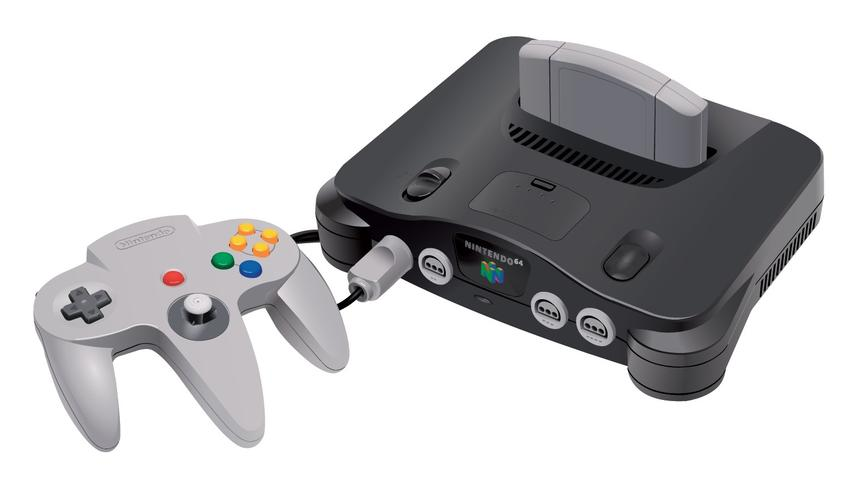Удивительно, что, несмотря на коммерческий успех своих процессоров, MIPS испытывала финансовые трудности и в конечном счете была куплена компанией SGI и переименована в MIPS Technologies. Следом начались выдаваться лицензии на производство клонов сторонним компаниям. Так, компания QED (Quantum Effects Devices) создала недорогие MIPS-процессоры, которые использовались в маршрутизаторах Cisco. А NEC занималась производством «камня» VR4300, который «прописался» в игровой консоли Nintendo 64.
В 1994 году появился процессор R8000. Он стал первым MIPS-решением с суперскалярной архитектурой, которая подразумевает параллельное выполнение команд при условии, что исполнение одной команды не зависит от результата другой. Например, R8000 умел обрабатывать до четырех инструкций за такт.
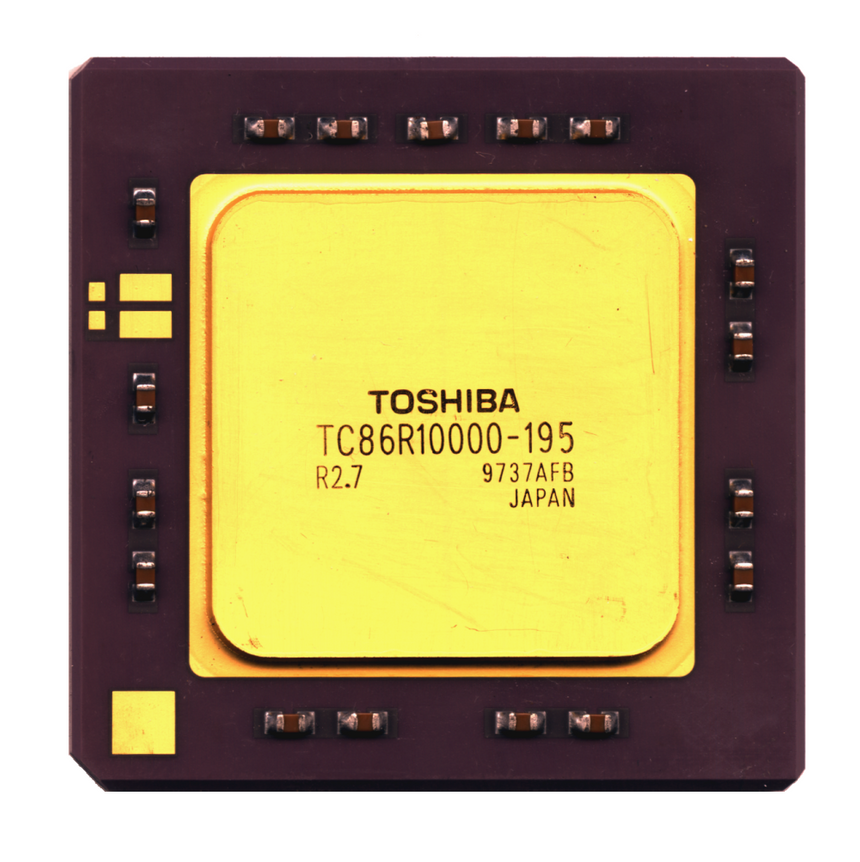В январе 1996 года MIPS представила процессор следующего поколения под названием R10000. «Десятитысячный» использовал такую же суперскалярную архитектуру, как и R8000, и, по сути, являлся доработанной версией предшественника. Также процессор имел кэш-память инструкций и данных объемом 32 Кбайт каждая и работал на частоте 175 МГц или 195 МГц. В 1997 году даже появилась версия чипа с частотой 250 МГц. Но даже при параметре 195 МГц R10000 был одним из быстрейших процессоров того времени.
К сожалению, после запуска R10000 компания SGI забросила MIPS-архитектуру. Все последующие кристаллы основывались на ядре «десятитысячного» и не имели в сравнении с ним каких-то принципиальных отличий. Например, процессор R12000, представленный в 1998 году, получил дополнительную стадию в конвейер и улучшенную работу с очередями инструкций. Его тактовая частота составляла 270 МГц, 300 МГц или 360 МГц. После R12000 вышли еще два поколения процессоров MIPS: R14000 и R16000. Они получили поддержку более быстрых системных шин, увеличенные частоты и кэш-память большего объема. Например, R16000 мог работать на частоте 700 МГц и поддерживал 64 Кбайт кэш-памяти инструкций и данных.
После этого MIPS занялась продажей лицензий на 32-битную и 64-битную архитектуры MIPS32 и MIPS64.
Процессоры SPARC
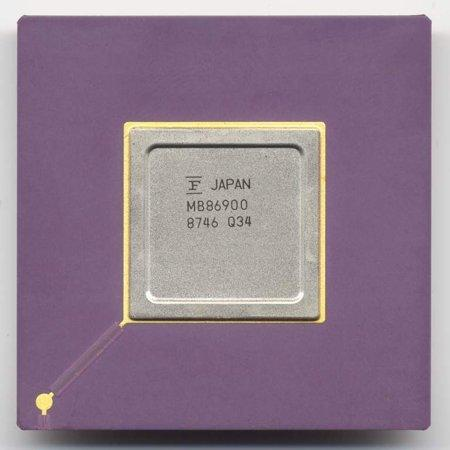Компания Sun Microsystems также решилась на разработку архитектуры — SPARC (Scalable Processor ARChitecture). Так, инженеры черпали вдохновение из проекта Berkeley RISC. А сам Дэвид Паттерсон даже привлекался к проекту в качестве консультанта. Тем не менее в результате SPARC больше напоминала MIPS-архитектуру. Например, в наборе команд платформы также отсутствовали инструкции умножения и деления. Особенностью архитектуры SPARC стало использование регистрового окна, с помощью которого был немного изменен процесс вызова функций в программах. Обычно при вызове программ процессор запоминал свое состояние (то есть запоминал состояние некоторых регистров общего и специального назначения), переходил к выполнению функции, а затем возвращался в свое исходное состояние до вызова функции. А в процессорах SPARC при вызове функции необходимые данные записывались в конец регистрового окна, а само регистровое окно перемещалось по файлу так, чтобы данные оказывались в начале окна. Такой подход в теории обеспечивал более высокую скорость работы.
Первая версия архитектуры получила название SPARC V7. Одноименный процессор на ее базе производился вплоть до 1992 года. Затем появилась следующая генерация архитектуры — SPARC V8. Она не претерпела каких-либо кардинальных изменений. Ключевыми отличиями стало добавление операций умножения и деления, а также улучшенное выполнение арифметики чисел с плавающей запятой. Как и SPARC V7, SPARC V8 оставалась 32-битной архитектурой, на базе которой был создан процессор microSPARC. Он принадлежал к Low-End-сегменту и использовался в небольших рабочих станциях и встраиваемых системах. Силами компаний Texas Instruments и Fujitsu также были выпущены улучшенные клоны. Более производительным решением стал процессор SuperSPARC.
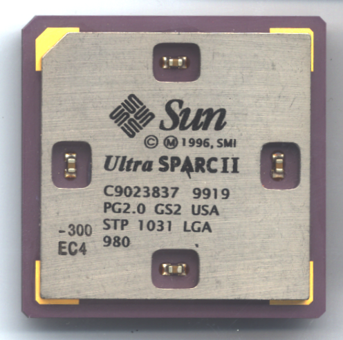Созданием следующего поколения архитектуры с именем SPARC V9 работала уже целая организация SPARC Architecture Committee, в состав которой, кроме самой Sun, входили такие компании, как Texas Instruments, Fujitsu, Philips и многие другие. Платформа была расширена до 64 бит и являлась суперскалярной с 9-стадийным конвейером. SPARC V9 предусматривала использование кэш-памяти первого уровня, разделенного на инструкции и данные объемом 16 Кбайт каждая, а также второго уровня емкостью 512-4096 Кбайт. Реализацией архитектуры стал процессор UltraSPARC с частотой 143-200 МГц.
UltraSPARC не был единственным процессором с архитектурой SPARC V9. В 1997 году был представлен UltraSPARC II.
Процессоры ARM
История ныне популярных ARM-процессоров, а точнее самой архитектуры ARM, начинается с компании Acorn Computers и ее компьютера BBC Micro. В нем использовался «камень» MOS Technology 6502, однако его производительности было недостаточно, чтобы создать десктоп следующего поколения. По различным причинам другие доступные процессоры также не подходили под требования Acorn, поэтому в компании задумались о создании собственного чипа. После изучения различных архитектур, инженеры Acorn взяли за основу процессоры RISC и все тот же кристалл MOS Technology 6502.
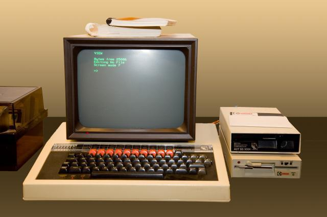У процессора MOS, например, была позаимствована архитектура доступа к памяти и набор инструкций. Каждая инструкция была дополнена специальным четырехбитным кодом условия. В зависимости от значения кода (true или false) инструкция могла выполняться или не выполняться. Это позволило сократить количество переходов при выполнение операций, которые негативно влияли на производительность конвейерной архитектуры. Также разработчики заложили в первоначальную ревизию архитектуры команды, которые выполняли несколько элементарных операций. Словом, немного отступили от правил RISC. Однако в конечном счете это лишь улучшило производительность процессора.
Разработка архитектуры была завершена в 1985 году созданием процессора ARM. Первые же коммерческие варианты появились в 1986 году и носили название ARM2. По сравнению с CISC-процессорами, ARM2 был очень простым — он содержал всего 30 000 транзисторов. При этом он потреблял очень мало энергии и в то же время был достаточно производительным. Несколько позже появились и ARM-процессоры, в которые были добавлены 4 Кбайт кэш-памяти, что еще больше повысило производительность кристаллов.
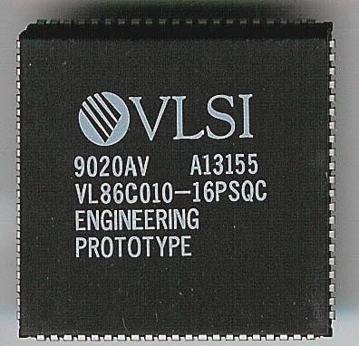К концу 1980-х годов Acorn занималась разработкой архитектуры ARM уже не в одиночку – к ней присоединилась Apple. В связи с этим подразделение, занимавшееся непосредственно ARM-процессорами, было преобразовано в отдельную компанию – Advanced RISC Machines. Первым продуктом новой компании стало процессорное ядро ARM6 и процессор ARM610, который использовался в одном из первых в мире КПК Apple Newton.
Однако ARM-процессоры уже не могли соперничать с CISC-решениями в плане производительности, а в RISC-сегменте господствовали процессоры с архитектурой MIPS. Тогда в ARM пошли иным путем. Компания начала позиционировать ARM6 как встраиваемое ядро, которое любой сторонний производитель мог использовать в своих процессорах за небольшие деньги. Такая политика принесла свои плоды, и ядро ARM стало очень популярным, а сама компания — коммерчески успешной.
Вместе с компанией DEC была разработана архитектура для более производительных ARM-решений под названием StrongARM, которое представляло собой классическую скалярную архитектуру с 5-стадийным конвейером. Архитектура имела блоки управления памятью и поддерживала кэш-память инструкций и данных объемом 16 Кбайт каждая.
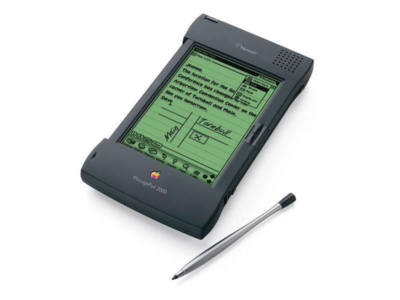Первый процессор на базе StrongARM — SA-110 — был представлен в феврале 1996 года. Он работал на тактовых частотах 100 МГц, 160 МГц или 200 МГц. «Камень» использовался в Apple MessagePad 2000, а также системах Acorn Computer Risc PC и Eidos Optima. На протяжении 1996 года SA-110 оставался самым производительным мобильным процессором.
В 1997 году права на архитектуру StrongARM были проданы компании Intel, которая занялась разработкой следующего поколения платформы. В 2000 году оно было представлено, но архитектура (а точнее реализация архитектуры) носила другое название — Xscale. Платформа получила множество изменений. Например, длина конвейера была увеличена до 8 стадий. Объем кэш-памяти как для инструкций, так и для данных увеличился до 32 Кбайт. XScale использовался в таких устройствах, как RIM Blackberry, Dell Axim, мобильном телефоне Motorola A780 и других девайсах.
Процессоры PowerPC
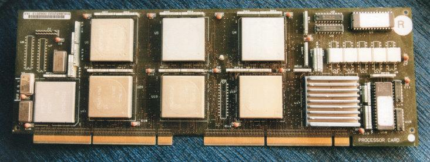Если быть уж совсем точным, то первой компанией, начавшей разработку RISC-архитектуры, стала IBM. Еще в 1974 году стартовала разработка процессора IBM 801, которая и заложила первые основы для этой платформы. А проект Berkeley RISC окончательно сформировал архитектуру.
В начале 80-х годов некоторые процессоры IBM для встраиваемых систем использовали архитектуру 801. Процессор на его базе также «прописался» в компьютере IBM 9370.
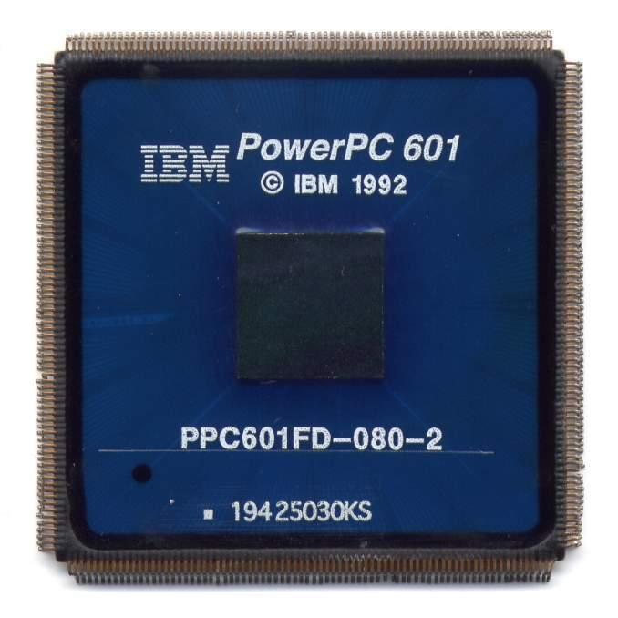В 1985 году IBM начала разработку RISC-архитектуры следующего поколения. Проект получил название America Project. Разработка процессора и набора инструкций для него закончилась в 1990 году. Сам кристалл получил название POWER1 и использовался в серверах и рабочих станциях IBM. Он обладал достаточно высоким уровнем производительности, но имел многочиповую компоновку и состоял из 11 различных микросхем. В 1992 году IBM представила бюджетный вариант процессора POWER1, который умещался в одном чипе.
В 1993 году была представлена второе поколение архитектуры POWER2. В него было добавлено по одному дополнительному блоку арифметико-логических операций и вычислений с плавающей запятой. Также был расширен набор команд: например, была добавлена операция вычисления квадратного корня из числа на аппаратном уровне. Тактовая частота процессора варьировалась от 55 МГц до 71 МГц, а кэш-память данных и инструкций — 256 Кбайт и 32 Кбайт соответственно. Как и предшественник, новый процессор имел многочиповую компоновку. Но в мае 1994 года была выпущена и одночиповая версия.
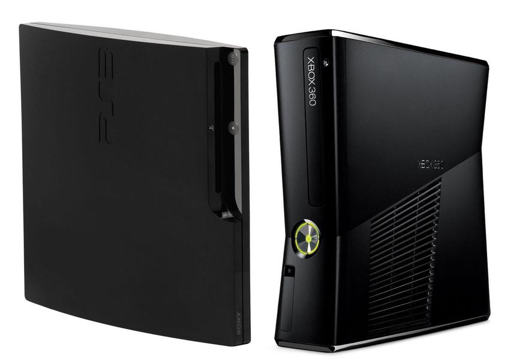Однако еще до выхода POWER2 IBM вместе с Apple и Motorola образовали альянс AIM и договорились о создании улучшенной архитектуры на основе POWER. В выигрыше остались все три компании, получив один из самых быстрых RISC-процессоров на рынке. Разработанная совместно архитектура получила название PowerPC. Помимо базового набора функций платформы POWER, в нее были добавлены поддержка работы в двух режимах (big-endian и little-endian), новые инструкции для вычислений с плавающей запятой и обратная совместимость с 32-битным режимом работы для 64-разрядной версии архитектуры.
В отличие от других RISC-архитектур, которые занимали узкие ниши рынка, PowerPC позиционировалась как платформа-конкурент x86. Ее основным назначением являлись персональные компьютеры. Так, процессор на базе PowerPC довольно долгое время использовался в компьютерах Apple Macintosh — вплоть до 2006 года.
Архитектура конкурировала наравне с x86 до 2001 года, но после этого угнаться за процессорами Intel и AMD не смогла. Несмотря на это, процессоры на базе PowerPC использовались в игровых консолях Sony PlayStation 3 и Microsoft Xbox 360.
В 90-е годы IBM успела выпустить третью генерацию процессоров под названием POWER3, которая, по сути, стала реализацией 64-разрядной архитектуры PowerPC. Чип создавался с прицелом на использование в серверах и рабочих станциях, но в итоге его главным применением стали системы IBM RS/6000.
Процессоры DEC Alpha
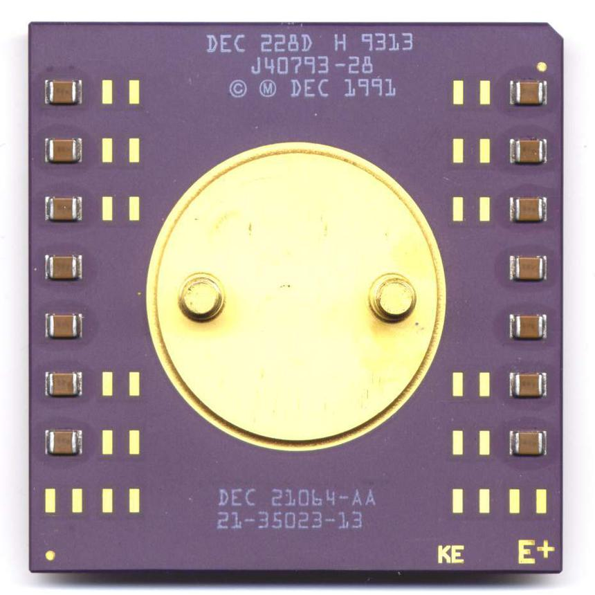Архитектура DEC VAX безнадежно устаревала и в начале 90-х в компании задумались о разработке собственной RISC-платформы. Ей стала Alpha, выпущенная в 1994 году. Первым процессором стал Alpha 21064 с кодовым названием EV4. Это 64-разрядный суперскалярный кристалл с конвейерной архитектурой. То есть имел классический RISC-дизайн. Процессор DEC выгодно отличала отлаженная работа всех его блоков. Так, при равной с другими «камнями» частоте EV4 показывал более высокую производительность. Внешняя шина процессора была 128-разрядной. Он имел 16 Кбайт кэш-памяти данных и инструкций и изготавливался с помощью технологии CMOS-4. Тактовая частота EV4 составляла 150 МГц или 200 МГц. Несколько позже появилась модификация под названием 21064A, которая могла работать на скоростях вплоть до 300 МГц, что обеспечило кристаллу звание самого быстрого процессора того времени. Основным применением EV4 стали серверы и рабочие станции.
Alpha 21064A оставался топовой моделью DEC до выхода следующего поколения процессоров — 21164 (EV5). Он обладал двумя целочисленными блоками и двумя модулями вычислений с плавающей запятой. В EV5 было уже три уровня кэш-памяти: два располагались непосредственно в процессоре, а третий был внешним. Кэш-память первого уровня была разделена на две части: кэш данных и кэш инструкций объемом 8 Кбайт каждый. Объем кэш-памяти второго уровня составлял 96 Кбайт. Тактовая частота процессора варьировалась от 266 МГц до 333 МГц. Alpha 21164 перенял пальму первенства у Alpha 21064A и был быстрейшим процессором до выхода Pentium Pro. Тем не менее, ответ DEC не заставил себя долго ждать — компания выпустила более производительный процессор Alpha 21164A, работающий на более высоких тактовых частотах (до 666 МГц). Процессор использовался в рабочих станциях и серверных компьютерах таких компаний, как Digital, Network Appliance и Cray Research.
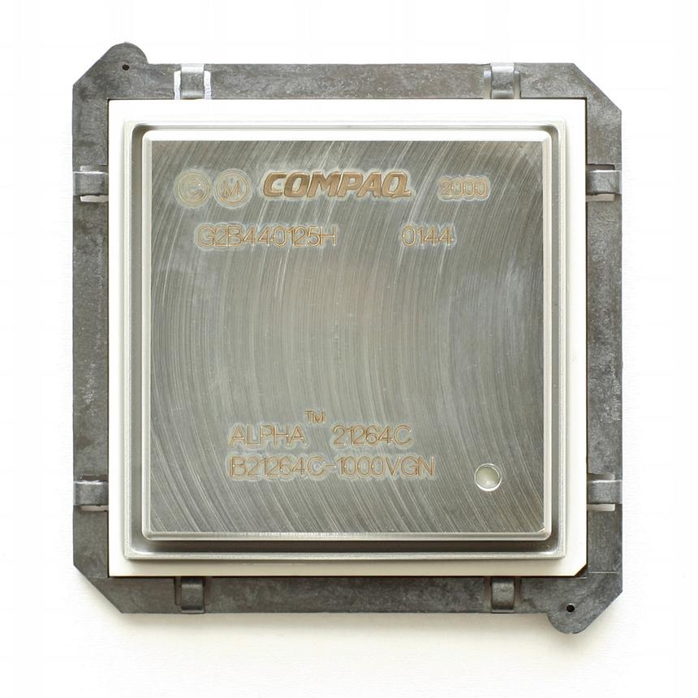В 1996 году было представлено следующее поколение процессоров DEC — Alpha 21264 (EV6). Чип получил несколько важных изменений по сравнению с предшествующими моделями. Например, он поддерживал внеочередное исполнение инструкций, что повлекло за собой полную реорганизацию ядра. Целочисленные блоки и блоки загрузки/сохранения были объединены в единый модуль Ebox, а блоки вычислений с плавающей запятой выделены в модуль Fbox. Помимо самих блоков, эти юниты содержали еще и файлы регистров. Структура кэш-памяти опять стала двухуровневой — она пришла на смену трехуровневой организации кэша в Alpha 21164. Кэш первого уровня сохранил разделение на память для инструкций и для данных. Объем каждой части составлял 64 Кбайт. Что касается кэш-памяти второго уровня, то ее объем мог составлять от 1 Мбайт до 16 Мбайт. Плюс процессор получил поддержку предсказания ветвлений. С течением времени выпускались все новые и новые версии процессоров Alpha 21264, в которых, прежде всего, наращивалась тактовая частота. Последней модификацией стал Alpha 21264E, который работал на частоте 1250 МГц.
Увы, но линейка процессоров Alpha 21264 стала последней в истории «независимой» DEC. В начале 1998 года DEC признали банкротом, и она была поглощена компанией Compaq.
Архитектура Intel P5
Процессоры с архитектурой RISC в своем большинстве заняли свою специализированную нишу, однако в настольных системах все равно продолжали использоваться кристаллы с архитектурой x86. Их развитие продолжалось, пусть и с некоторыми изменениями.
Несмотря на то, что Intel вышла на рынок RISC-процессоров со своими решениями i860 и i960, основную ставку в компании все же делали на x86-кристаллы. Следующим поколением «камней» стали всем известные Pentium на базе архитектуры P5, выпущенные в 1993 году.

Была проделана большая работа. Во-первых, P5 стала суперскалярной. Архитектура работала с помощью двух конвейеров, каждый из которых мог выполнять две операции за такт. Во-вторых, шина данных стала 64-битной, что позволило передавать вдвое больший объем данных за цикл. В-третьих, кэш-память данных и инструкций была разделена на два отдельных блока объемом 8 Кбайт каждый. Помимо этого, в процессор был добавлен блок предсказания ветвлений, а модуль вычислений с плавающей запятой стал более производительным.
Первые процессоры линейки Pentium работали на частотах 60 МГц или 66 МГц. При этом для их работы требовалось напряжение 5 В, поэтому они сильно грелись. Также первые «пни» прославились неправильной работой блока вычислений с плавающей запятой, который в некоторых случаях при выполнении деления чисел выдавал неверный результат. Поэтому вскоре Intel запустила в продажу процессоры с исправленной архитектурой P54C.
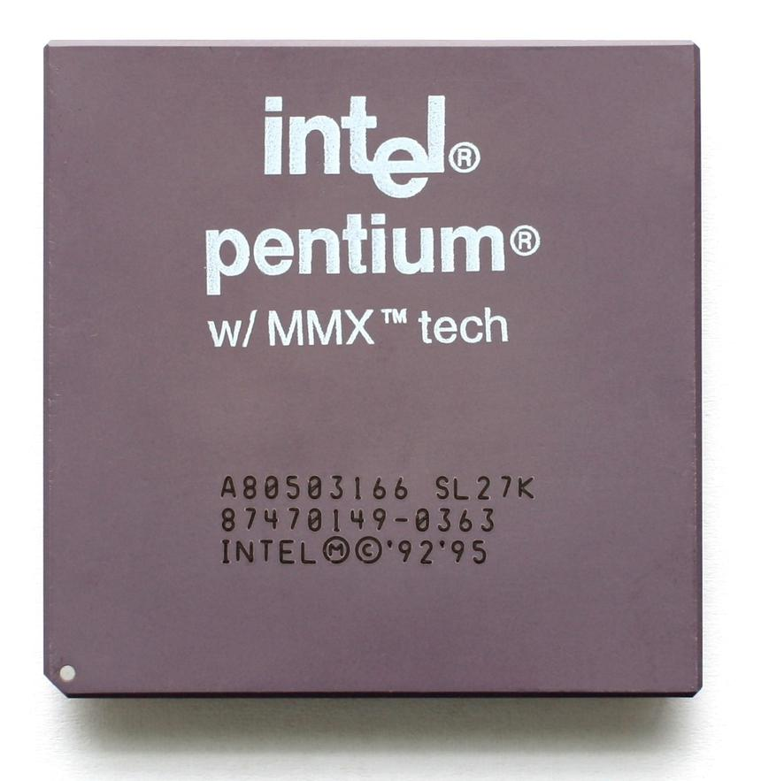P54C стала своего рода работой над ошибками. Производство новых процессоров было переведено на 0,6-мкм техпроцесс. Сами кристаллы теперь работали с напряжением 3,3 В, что позволило решить проблему с перегревом. Что касается изменений на уровне архитектуры, то в P54C был добавлен полуторный множитель — отныне процессоры работали на более высокой частоте, чем системная шина. Скорость работы процессоров составляла 75 МГц, 90 МГц или 100 МГц. Также P54C устанавливались в разъемы Socket 5 или Socket 7. В отличие от P5, которые поддерживали только Socket 4. Сама архитектура P54C еще раз получила обновление в 1995 году, когда была переведена на 350-нм техпроцесс. Это позволило вновь снизить энергопотребление кристаллов, а также увеличить их тактовую частоту до 200 МГц.
В 1996 году P5 получила последнее обновление — P55C. Ключевым нововведением стала поддержка набора команд MMX (MultiMedia eXtension), которые значительно увеличили производительность архитектуры при работе с мультимедиа. А новые процессоры так и именовались — Pentium MMX. Однако это стало не единственным улучшением платформы. Объем кэш-памяти первого уровня был увеличен до 32 Кбайт, а производство Pentium MMX было переведено на 0,28-мкм техпроцесс. Это позволило нарастить частоту процессоров до 233 МГц. На этом развитие ядра P5 для настольных систем завершилось.
Архитектура AMD K5
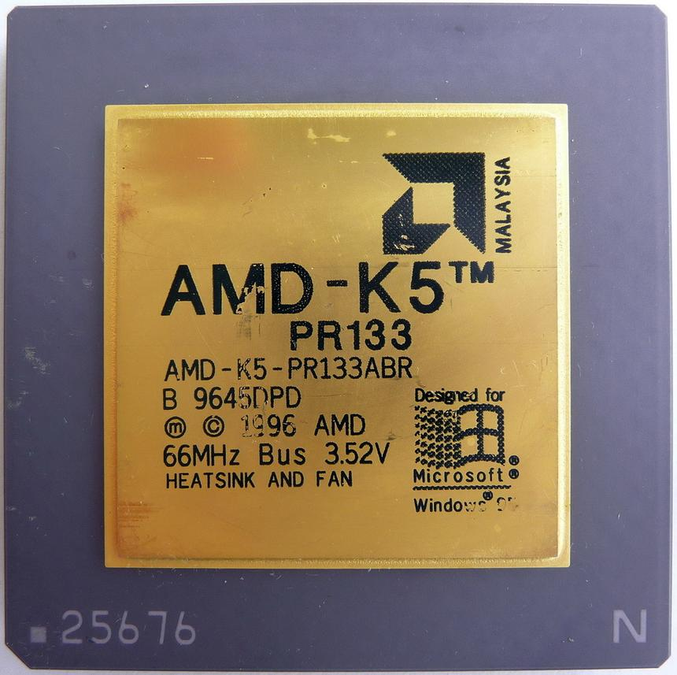Как мы уже говорили в предыдущих частях материала, с момента своего основания AMD занималась производством клонов процессоров Intel. В начале 90-х дубликаты AMD были настолько хороши, что компанию начали рассматривать как серьезного игрока на рынке.
В это время AMD уже занималась разработкой первой собственной архитектуры. И в 1996 году была представлена платформа K5, которая должна была составить конкуренцию Intel Pentium. Архитектура представляла собой RISC-ядро, но работала со сложными CISC-инструкциями. Это было возможно благодаря наличию в процессоре транслятора, который разбивал длинные инструкции на простые RISC-операции. Все K5 имели пять целочисленных блоков и один блок вычислений с плавающей запятой. Также архитектура предусматривала наличие блока предсказаний ветвлений, размер которого был в четыре раза больше, чем у Pentium. Объем кэш-памяти инструкций составлял 16 Кбайт, а данных — 8 Кбайт. Тактовая частота процессоров варьировалась от 75 МГц до 133 МГц. Несмотря на то, что по многим характеристикам архитектура превосходила Pentium, на практике процессоры K5 уступали решениям Intel и не получили широкого распространения.
Архитектура Intel P6
В 1995 году на смену архитектуре P5 пришла, вы ни за что не поверите, архитектура P6 — CISC-платформа с RISC-ядром. Для разбиения сложных операций на простые в процессорах имелся специальный декодер. P6 являлась суперскалярной и поддерживала изменения порядка выполнения операций. Ее конвейер имел целых 12 стадий. Также в архитектуре был предусмотрен блок предсказания ветвлений. Процессоры использовали двойную независимую шину, которая значительно увеличила пропускную способность памяти. P6 имела самый производительный на то время блок вычислений с плавающей запятой.
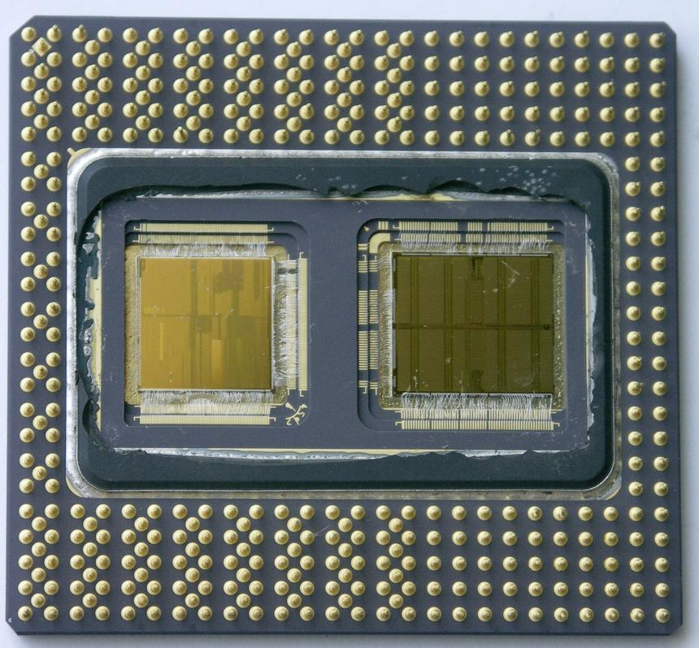В том же 1995 году были представлены процессоры следующего поколения Pentium Pro. Кристаллы работали на частоте 150-200 МГц, имели 16 Кбайт кэш-памяти первого уровня и до 1 Мбайт кэша второго уровня. Нужно отметить, что Pentium Pro не поддерживал набор инструкций MMX. Во многом из-за этого чипы уступали в производительности процессорам Pentium в 16-битных приложениях. В настольном сегменте Pentium Pro откровенно провалились, и вскоре Intel «переквалифицировала» их в серверные. А для обычных пользователей в 1997 году были представлены Pentium II.
Второе поколение «пней» базировалось на том же ядре P6 (с кодовым именем Klamath), которое использовалось в процессорах Pentium Pro. По сравнению с Pentium у второго поколения кристаллов объем кэш-памяти первого уровня был увеличен до 32 Кбайт. Были добавлены и инструкции MMX. Учитывая низкую производительность Pentium Pro в 16-битных приложениях, были внесены изменения в архитектуру с прицелом как раз на повседневную работу. В итоге производительность в 16-разрядных программах увеличилась на треть. Максимальная частота процессоров Klamath составляла 300 МГц.
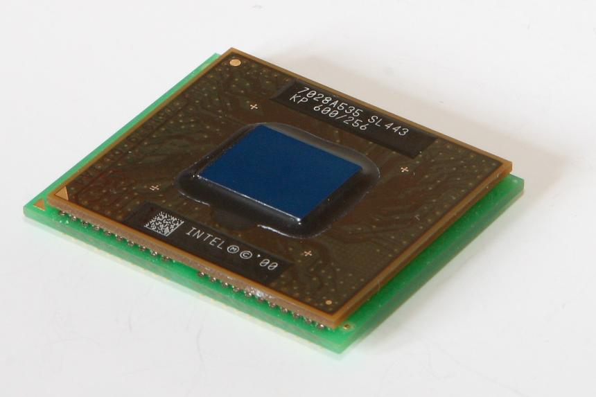В 1998 году в продаже появились процессоры с улучшенным ядром P6 (Deschutes). Они стали менее горячими. При этом частотный потенциал моделей увеличился. Так, Deschutes могли работать на частоте 450 МГц. Кстати, в линейке Pentium II впервые произошла дифференциация: серверные и Low-End-процессоры начали продаваться под отдельными брендами: Xeon и Celeron соответственно.
В 1999 году были представлены первые процессоры Pentium III. Они базировались на новой генерации ядра P6 под названием Katmai, которые являлись модифицированными версиями Deschutes. В ядро была добавлена поддержка инструкций SSE, а механизм работы с памятью был улучшен. Тактовая частота процессоров Katmai достигала 600 МГц.
В конце 1999 года на смену Katmai пришло ядро Coppermine. Новые процессоры выпускались по 180-нм техпроцессу и имели интегрированную кэш-память второго уровня. в отличие от Katmai, у которого она была вынесена за пределы процессора. Частота процессоров достигала уже 1,13 ГГц.
Архитектура AMD K6
После неудачи архитектуры K5 AMD была полна решимости создать достойного конкурента процессорам Intel. В компании пошли нестандартным путем — в 1996 году фирма приобрела небольшого разработчика x86-процессоров NexGen и выпустила их проект Nx686 как K6.
Новая архитектура серьезно отличалась от K5. Процессоры K6 поддерживали изменение порядка выполнения инструкций, набор команд MMX и блок вычислений с плавающей запятой. Как и K5, новая платформа являлась суперскалярной архитектурой CISC с RISC-ядром. Первые процессоры K5 производились по 350-нм и 250-нм техпроцессу, обладали 64 Кбайт кэш-памяти первого уровня и работали на частотах, разбросанных в диапазоне 166-300 МГц.
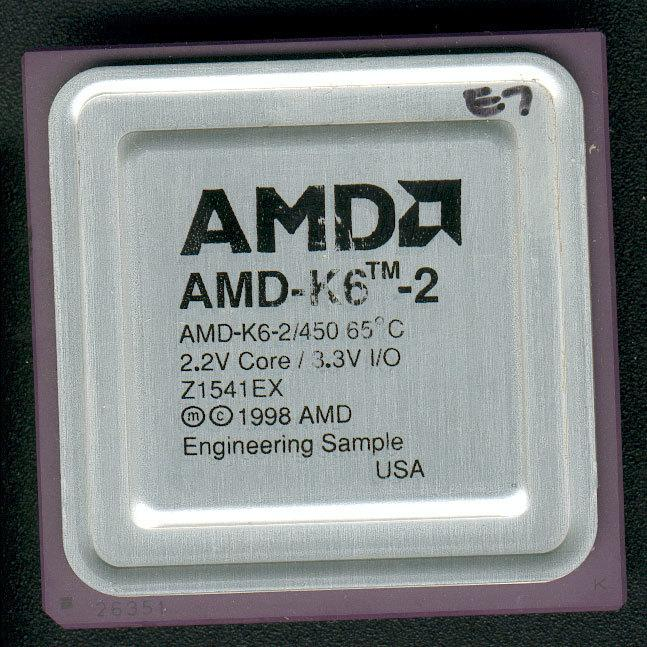В 1998 году AMD выпустила «камни» с улучшенной архитектурой K6-2. Новые кристаллы конкурировали с самыми производительными моделями Pentium II. Процессоры получили поддержку набора SIMD-инструкций 3DNow!, который повысил производительность в вычислениях с плавающей запятой, а также увеличенный до 64 Кбайт кэш первого уровня. Максимальная частота чипа составляла 550 МГц. K6-2 была коммерчески успешной архитектурой, которая обеспечила AMD столь необходимую для дальнейшего существования финансовую стабильность.
В 1999 году свет увидела третья генерация архитектура K6 — K6-III. Процессоры рассматривались как конкурент Pentium III. Решения AMD действительно обеспечивали такой же уровень производительности при меньшей стоимости. Сама же суть архитектуры K6-III была проста. Так, кристалл сохранил все «фишки» K6-2, но при этом получил встроенную кэш-память второго уровня объемом 256 Кбайт. Объем кэша первого уровня составлял 64 Кбайт. На K6-III развитие архитектуры K6 завершилось. В том же 1999 году ее сменила платформа K7.